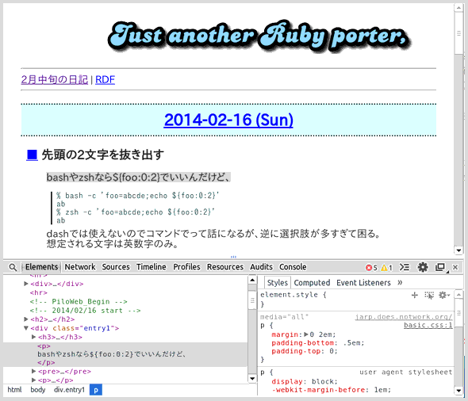

〜2014年2月中旬〜
このRubyの解なんだけど、与えられた文字以外を改行($/)に変換するという発想がすばらしい。
puts [*?0..?Z].join.tr('^ABC321STPpJqZZr0'.upcase,' ').gsub(/\B\w+\B/,?-).scan(/\S+/)*', '
puts [*?0..?Z].join.tr('^ABC321STPpJqZZr0'.upcase,$/).gsub(/\B\w+\B/,?-).scan(/.+/)*', '
puts [*?0..?Z].join.tr('^ABC321STPpJqZZr0'.upcase,$/).gsub(/\B.+\B/,?-).scan(/.+/)*', '
$><<[*?0..?Z].join.gsub(/[^ABC321STPpJqZZr0]/i,$/).gsub(/\B.+\B/,?-).split*', '
と変遷していったが、改行じゃなくてまとめて全部直接", "に変換しちゃえばもうちょっと短くなる。
$><<[*?0..?Z].join.gsub(/[^ABC321STPpJqZZr0]+/i,", ").gsub /\B\w+\B/,?-
結果は 0-3, A-C, J, P-T, Z となる。これをbashとGNU sedで解くとこんな感じ。
% bash -c 'echo {0..9} {A..Z}|sed "s/ //g;s/[^ABC321STPpJqZZr0]\+/, /gi;s/\B\w\+\B/-/g"'
0-3, A-C, J, P-T, Z
{A..Z}の部分がzshだと展開されない。printfを使う手もあるか。
% bash -c 'printf %s {0..9} {A..Z}|sed "s/[^ABC321STPpJqZZr0]\+/, /gi;s/\B\w\+\B/-/g"'
CodeIQ MAGAZINEってログインしないと見られないが、なぜかRSSは全文読めるようになっている。
「暗号を解いて総額10万円あてよう！」問題解説～真の解答に辿りつけたのは…？単なるROT13にあらず。｜CodeIQ MAGAZINE
ビット演算は面倒だけど、perlだと
% perl -le 'print "sunny" & "windy"' sandy
みたいに簡単にできてしまう。rubyだとやはりちょっと面倒。
% ruby -e 'puts "sunny".bytes.zip("windy".bytes).map{|x,y|x&y}.pack("C*")'
sandy
Pocketの未読数を表示する拡張が欲しくて入れてみた。
Mark items as read when you click on themはなぜか既読ならないことが多い。
100個越えるとちょっと対処できないので、結局読んだことにしてしまうが。
sudoもttyを必要とするようで。
% printf "%s\n" foo bar | xargs -I@ ssh host sudo cp -av /tmp/@ /root/@.hoge sudo: sorry, you must have a tty to run sudo sudo: sorry, you must have a tty to run sudo % printf "%s\n" foo bar | xargs -I@ ssh -t host sudo cp -av /tmp/@ /root/@.hoge Pseudo-terminal will not be allocated because stdin is not a terminal. sudo: sorry, you must have a tty to run sudo Pseudo-terminal will not be allocated because stdin is not a terminal. sudo: sorry, you must have a tty to run sudo % printf "%s\n" foo bar | xargs -I@ ssh -tt host sudo cp -av /tmp/@ /root/@.hoge `/tmp/foo' -> `/root/foo.hoge' Shared connection to host closed. `/tmp/bar' -> `/root/bar.hoge' Shared connection to host closed.
このもう1個-tを足す件を忘れていて、 自分の日記を読み返した。
とりあえず第6問。seq 100を変形するんだろうなやっぱ。
Rubyなら"a/"*100で済むところだが。
% seq 100|awk '$0="a/"' ORS=
こんな感じか。ああ、seq -sを使えばもうちょっと短くなるか。
% seq -sa/ 101|tr -d 0-9
-sはセパレータなので101にする必要あり。
zshならrepeatが使えるのでこれでいいんだけど。
% repeat 100 printf a/
いやいやもっと簡単に表示もしないで
% mkdir -p ${(l:200::a/:)}
でokだ。
% echo ${(l:200::a/:)}|grep -o a/|wc -l
100
なぜ200かというと%200s的な意味なので。
bashやzshなら${foo:0:2}でいいんだけど、
% bash -c 'foo=abcde;echo ${foo:0:2}'
ab
% zsh -c 'foo=abcde;echo ${foo:0:2}'
ab
dashでは使えないのでコマンドでって話になるが、逆に選択肢が多すぎて困る。
想定される文字は英数字のみ。
% expr substr abcde 1 2 ab % expr abcde : '\(..\)' ab % echo abcde | cut -b-2 ab % echo abcde | grep -o \^.. ab % echo abcde | sed 's/\(..\).*/\1/' ab % echo abcde | awk '$0=substr($0,1,2)' ab % printf %.2s abcde ab% echo abcde | dd bs=1 count=2 2> /dev/null ab% echo abcde | head -c2 ab
と、ここで変な方法を思い付いた。
% dash -c 'foo=abcde;echo ${foo%${foo#??}}'
ab
先頭の2文字を消した文字列を作り出してから、改めてその文字列を使って消す。
Google Chromeのコンテキストメニューに要素の検証が一番下にあるが、
これを選ぶ前に知りたいところを選択しておくと対応する部分がハイライトされる。
これは開いた後でも何回も使えるので覚えておこう。

どこかで設定してるんだなんだかわからないけど、
zshは大文字小文字区別しないが、bashは区別する。
man bashしてみたら補完は
set completion-ignore-case on
でいけるようだが、これは違うし。
massrenが話題だが同じようなツールとしてqmvがある。
Ubuntuならrenameutilsを入れればok。
renameutils home
正直これを見ても使い方がわからないが、
いろいろぐぐると実行例があるので参考に。
qmv & qcp - Copy/Rename Files Quickly By Editing File Names In Text Editor | MyLinuxBook
こんな感じで左右同じものが2つ出てくるので、右側だけ編集して名前を変えて保存。
vaildなら名前が変わる。
左側をいじるとinvalidになって会話モードに勝手に突入するので注意。
不用意に行削除とかしてもinvalidなのでまあちょっと安全なのかな。
/etc/sudoersの最後に
#includedir /etc/sudoers.d
とあるので、これってコメント外さないと使えないよなあ毎回編集するたびに思っていたが、
ふと上を見ると
# See sudoers(5) for more information on "#include" directives:
と書いてあった。"#include"と#つきだ。ってことはコメントじゃないのか？
man sudoers見たら#includeと#includedirだけはdirectiveでありコメントではないとのこと。
なんだそういうことかよ。
というわけでもうvisudoで/etc/sudoersをいじるのはやめて/etc/sudoers.d/ebanを作ることにした。
# vi /etc/sudoers.d/eban
でもいいが、気づかずにエラーのまま保存してしまうとsudoできなくなってしまう。
やはりここもvisudo経由で。ちゃんとチェックしてくれるので安心だ。
# visudo -f /etc/sudoers.d/eban
のように実行すればok。